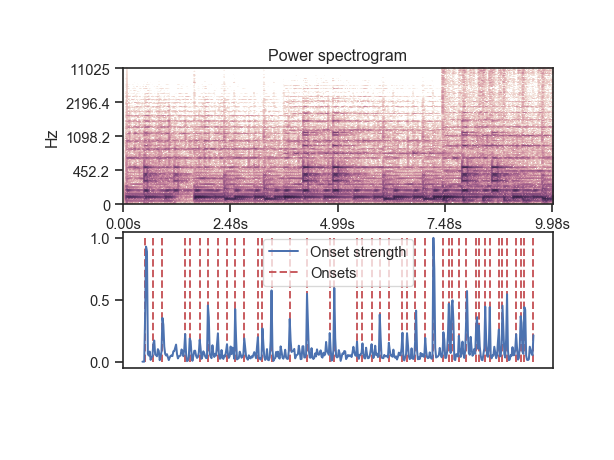

librosa.onset.onset_detect¶
-
librosa.onset.onset_detect(y=None, sr=22050, onset_envelope=None, hop_length=512, **kwargs)[source]¶ Basic onset detector. Locate note onset events by picking peaks in an onset strength envelope.
The peak_pick parameters were chosen by large-scale hyper-parameter optimization over the dataset provided by [1].
[1] https://github.com/CPJKU/onset_db Parameters: - y : np.ndarray [shape=(n,)]
audio time series
- sr : number > 0 [scalar]
sampling rate of y
- onset_envelope : np.ndarray [shape=(m,)]
(optional) pre-computed onset strength envelope
- hop_length : int > 0 [scalar]
hop length (in samples)
- kwargs : additional keyword arguments
Additional parameters for peak picking.
See
librosa.util.peak_pickfor details.
Returns: - onsets : np.ndarray [shape=(n_onsets,)]
estimated frame numbers of onsets
Note
If no onset strength could be detected, onset_detect returns an empty list.
Raises: - ParameterError
if neither y nor onsets are provided
See also
onset_strength- compute onset strength per-frame
librosa.util.peak_pick- pick peaks from a time series
Examples
Get onset times from a signal
>>> y, sr = librosa.load(librosa.util.example_audio_file(), ... duration=10.0) >>> onset_frames = librosa.onset.onset_detect(y=y, sr=sr) >>> librosa.frames_to_time(onset_frames[:20], sr=sr) array([ 0.07 , 0.279, 0.511, 0.859, 1.091, 1.207, 1.463, 1.672, 1.904, 2.159, 2.368, 2.601, 2.949, 3.065, 3.297, 3.529, 3.762, 3.994, 4.203, 4.69 ])
Or use a pre-computed onset envelope
>>> o_env = librosa.onset.onset_strength(y, sr=sr) >>> onset_frames = librosa.onset.onset_detect(onset_envelope=o_env, sr=sr)
>>> import matplotlib.pyplot as plt >>> D = np.abs(librosa.stft(y))**2 >>> plt.figure() >>> plt.subplot(2, 1, 1) >>> librosa.display.specshow(librosa.logamplitude(D, ref_power=np.max), ... x_axis='time', y_axis='log') >>> plt.title('Power spectrogram') >>> plt.subplot(2, 1, 2) >>> plt.plot(o_env, label='Onset strength') >>> plt.vlines(onset_frames, 0, o_env.max(), color='r', alpha=0.9, ... linestyle='--', label='Onsets') >>> plt.xticks([]) >>> plt.axis('tight') >>> plt.legend(frameon=True, framealpha=0.75)
